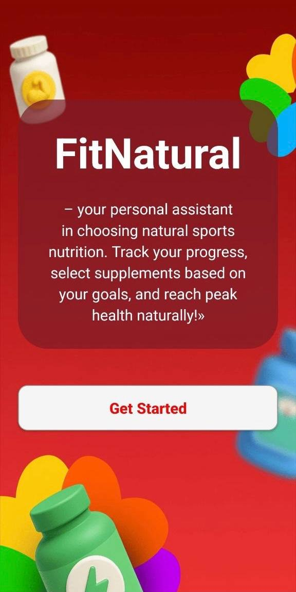
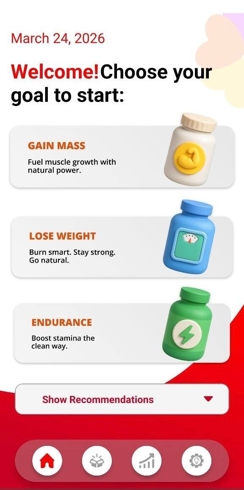
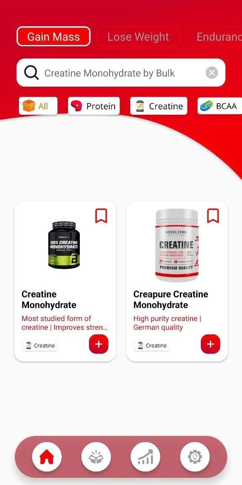
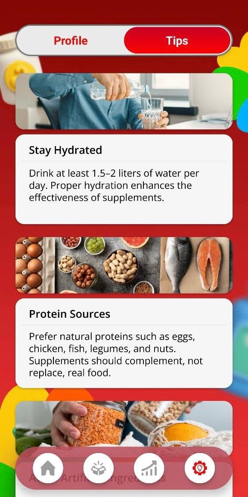
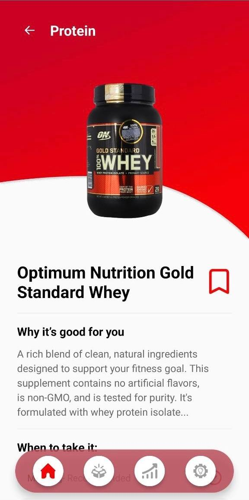
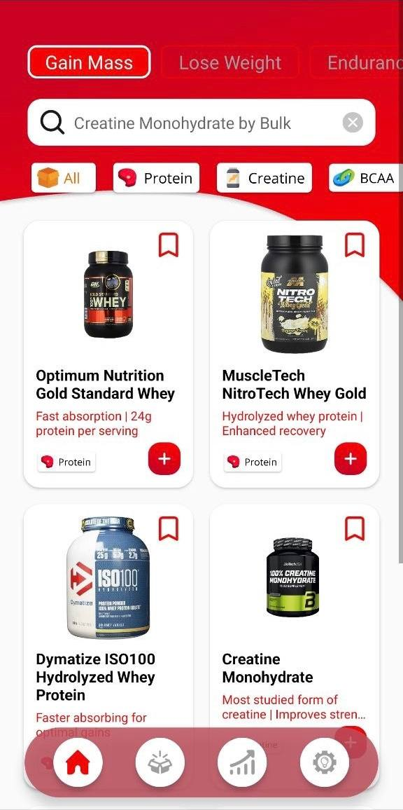
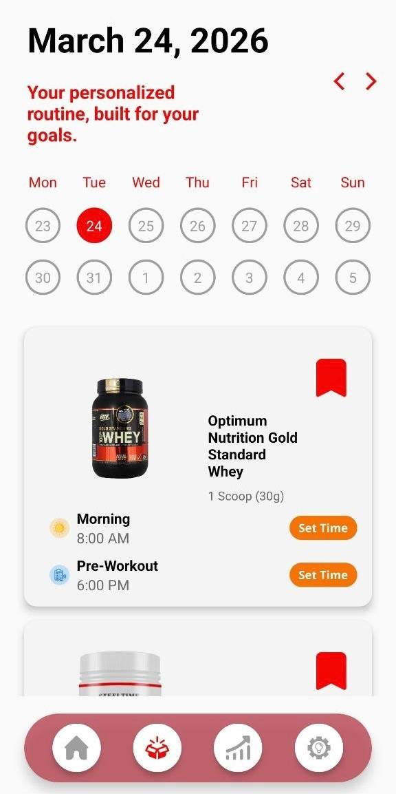
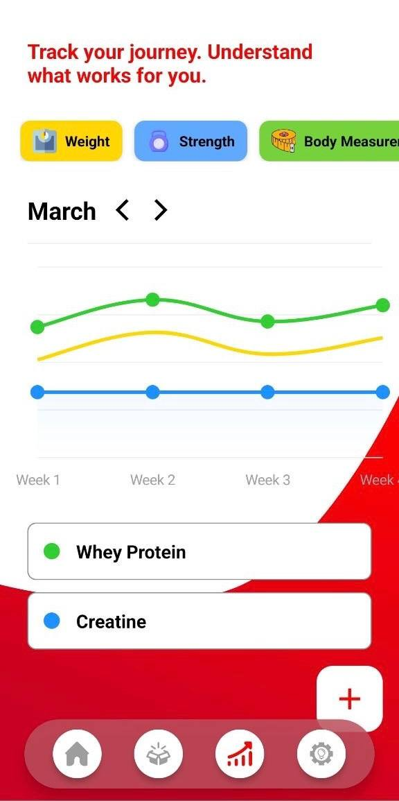
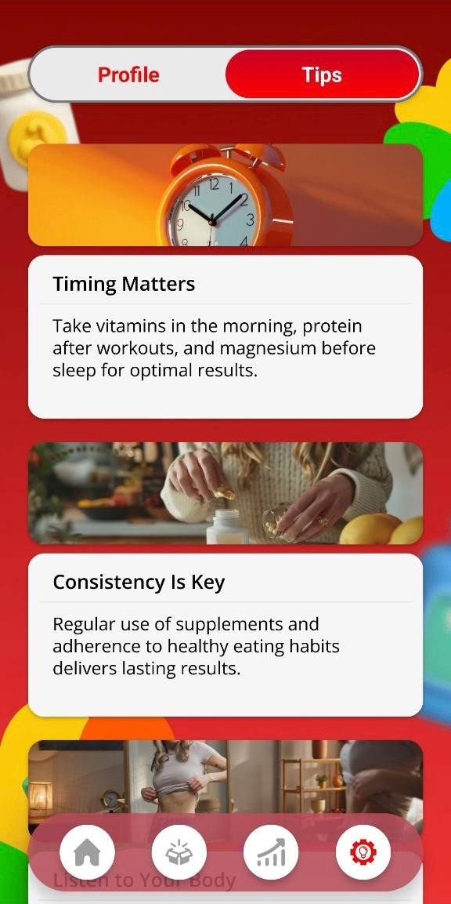

Natural nutrition assistant
Goals · Supplements · Progress · Tips
Build a cleaner supplement routine around your goals, your plan, and your progress
W2 Fit Natural is designed for people who want a more organized way to choose natural sports nutrition, follow routines, save products, monitor progress, and keep simple health-oriented tips close to the same daily flow.




Gain mass, lose weight, or build endurance through a cleaner app flow.
Move from product selection into calendar planning and progress analysis.
W2 Fit Natural feels less like a generic supplement catalog and more like a bright personal routine planner for nutrition, consistency, and progress
Main product capabilities
Goal-based entry
Users begin by choosing a clear fitness direction such as gain mass, lose weight, or endurance.
Supplement discovery
The app presents supplement cards through categories, search, and product-focused browsing.
Product detail screens
Each product can open into a more focused page with reasons, timing, and usage context.
Routine scheduling
Users can organize supplement timing inside a calendar-style routine layout.
Progress tracking
Charts and metric cards help users follow what works across weight, strength, and measurements.
Practical wellness tips
Tips screens expand the product from selection into healthier long-term supplement habits.
App journey
Move from choosing a goal into products, routine, analytics, and health tips
Intro entry
The opening is simple, direct, and clearly tied to natural fitness support.
Goal direction
The journey starts from purpose, not from random product browsing.
Catalog mode
Users can scan products visually and move quickly between categories.
Product detail
Each product gets a more intentional presentation than a simple product tile.
Focused discovery
The browsing flow stays useful even when the list becomes more specific.
Routine builder
The app moves from product interest into actual day-to-day usage planning.
Progress analytics
The app makes it easier to understand whether the routine is working.
Tips content
The app supports better decisions beyond just product selection.
Consistency layer
The guidance content supports routine adherence, not only app interaction.
Current screen
Start with the brand intro
The intro screen presents the app as a personal assistant for natural sports nutrition and sets a more lifestyle-oriented tone from the beginning.
App preview carousel





Why the app feels more useful than a simple supplement list
★★★★★
“It works well because the app is not only about products. It also helps with routine planning, consistency, and progress.”
Victor H.
Fitness app user
★★★★★
“The goal-first flow makes product browsing feel more logical and less random than most nutrition apps.”
Alex N.
Active routine user
★★★★★
“The tips section gives the app more depth because it supports healthier habits, not just purchases.”
Roman T.
Wellness-focused user
Download app
Use W2 Fit Natural to organize supplement choices and turn them into a cleaner routine
Choose a goal, browse products, save supplements, plan timing, track progress, and keep practical health tips close to your everyday fitness system.